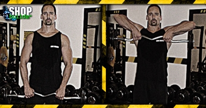

Ugrás a tartalomra
Ugrás a tartalomra
Testépítés
Állig húzás
{kind=link}
Hatás
Az állig húzás igénybe veszi a delta és a csuklyás izmot. Másodlagos terhelést kap a bicepsz és az alkar izomzata.
Kiinduló helyzet
Állj egyenesen, szűk fogást véve (a mutatóujjak kb. 15 cm-re legyenek egymástól a rúdon) a kétkezes súlyzó közepén, tenyerekkel a test felé. A mozgás elején a súlyzónak keresztbe kell feküdnie felső combodon, karod pedig legyen egyenes.
A mozgás
Lassan húzd a súlyzót felfelé tested közelében egy vonal mentén, könyöködet felfelé emelve és mindig a kezed vonala fölött tartva. Amint a rúd nyakmagasságba ér, tarts szünetet, és ereszd le a súlyzót lassan ugyanezen a vonalon, egészen addig, míg a combodhoz ér. Ismételd meg a gyakorlatot az előírt ismétlésszámban.
Edzéstipp
Minden ismétlésnél lassan ereszd le a súlyzót, ennél a gyakorlatnál ugyanannyi előnyöd származik a lassú leeresztésből, mint az emelésből.
Használj viszonylag széles fogást. Minél szélesebb a fogás, annál nagyobb terhelés éri az oldalsó deltaizmot, és nem mellesleg, megóvhatod a csuklód és a vállad egészségét is. Ha szűken fogod a rudat, akkor ugyan csökkented az első és oldalsó delta szerepét, azonban nem kívánatos stressznek teszed ki a vállöv belső részének törékeny szerkezetét.
Mindig nyújtsd ki a karodat, amikor a súly a mélypontra ér, majd kezdd el lassan felfelé húzni a rudat, kicsit növelve a lendületet, ahogy a súly az állad felé közelít. A fel-le mozgást ritmikusan végezd. Állj egyenesen, kényelmesen terpeszben (lábfejek 30-40 cm-re egymástól). Miközben a súly emelkedik, próbáld meg a könyöködet a lehető legmagasabban tartani.